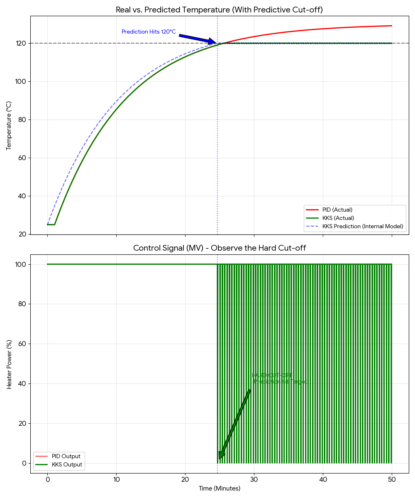
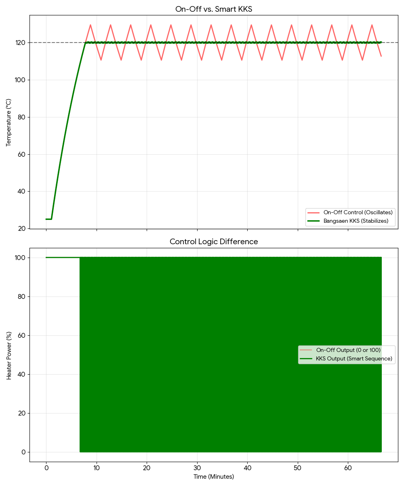

Controlling temperature in high-inertia systems (like industrial ovens) is notoriously difficult. It’s like driving a heavy truck on ice: if you wait until you see the stop sign to hit the brakes, you’ve already crashed.
Standard PID controllers drive "blind"—reacting only to current errors. This leads to two painful outcomes: Overshoot (burning the product) or Slow Rise Time (wasting production time).
1. The Problem: Driving Blind
We analyzed data from a standard industrial oven with a 60-second thermal delay. The PID controller, unaware of the delay, continues to apply 100% power until the temperature hits the target. By then, the residual heat in the heating elements pushes the temperature far beyond the setpoint (120°C).

2. The Solution: Bangsaen KKS (Predictive Cut-off)
Instead of reacting, our KKS Algorithm (based on Koopman Operator theory) builds an "Internal Model" of the oven. It predicts the future temperature 60 seconds ahead.
"By cutting power before the target is reached, we utilize the system's own inertia to coast perfectly into the setpoint. Zero Overshoot."
3. Beyond On-Off: Cruise Control
A common misconception is that this is just a "Bang-Bang" (On-Off) controller. It is not. Once the landing is complete, KKS shifts into a steady-state hold mode.

This technology runs efficiently on standard STM32 microcontrollers, proving that you don't need expensive hardware to achieve premium control performance.